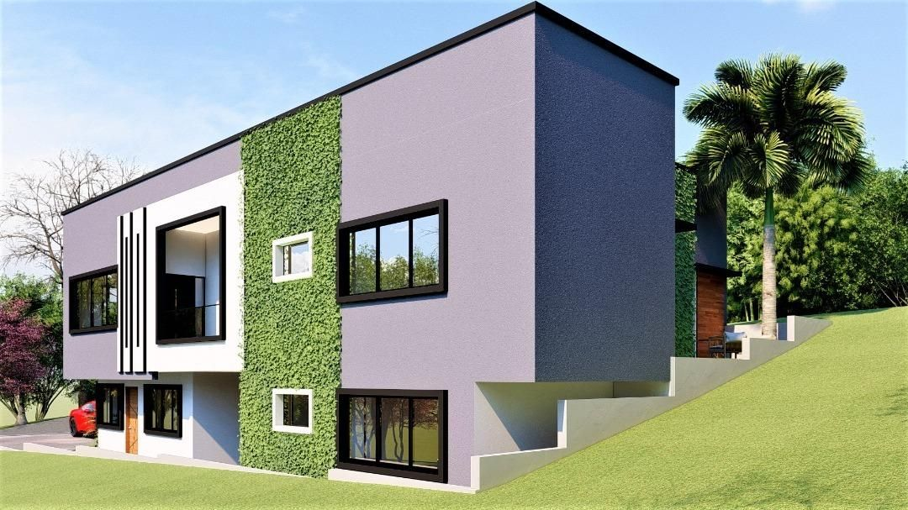
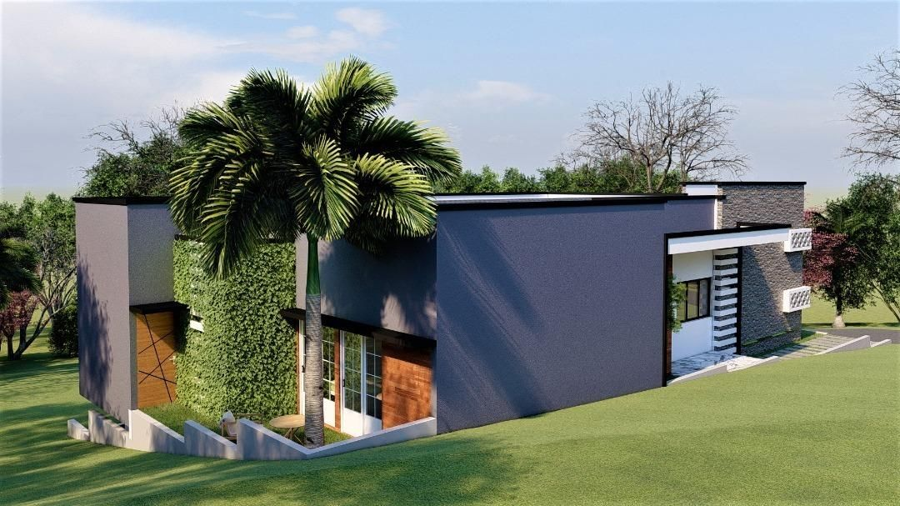
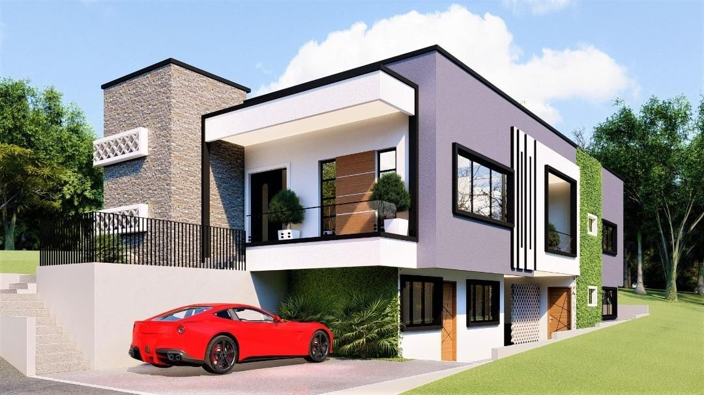
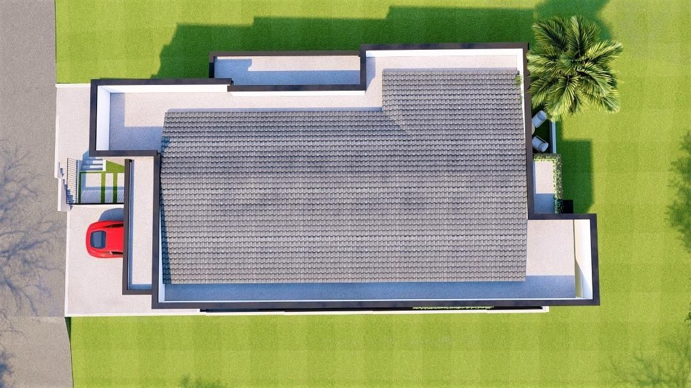
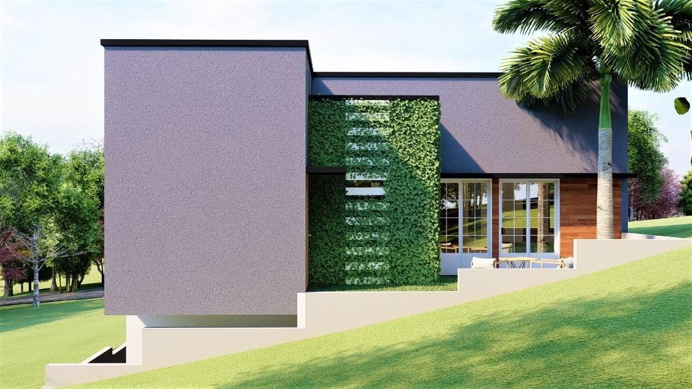

Équilibre des Volumes et Intimité Familiale
Le Duplex Domegne est une résidence privée conçue pour offrir un cadre de vie à la fois moderne et chaleureux. Le projet se concentre sur l'organisation spatiale d'un duplex familial, avec une attention particulière portée à la double hauteur du séjour et à la fluidité entre les espaces de réception et les zones privées.
L'approche architecturale privilégie des lignes épurées et une matérialité sobre, mettant en valeur la structure par des jeux de lumière naturelle. Développé en phase APD complète, le projet intègre des détails d'aménagement intérieur sur mesure, garantissant une cohérence totale entre l'enveloppe architecturale et l'expérience de vie quotidienne.





